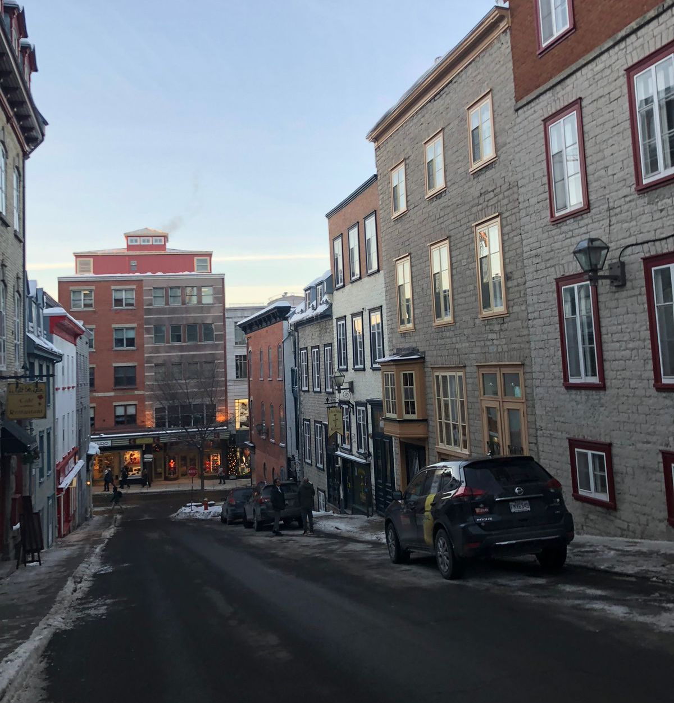

Viejo Montreal

El Viejo Montreal es el distrito histórico y una de las principales atracciones de la ciudad. Asentado en la orilla oeste del río Saint-Lawrence, Vieux-Montréal, como se le llama en francés, cubre aproximadamente un área de 1 kilómetro cuadrado. Fundado en 1642, todavía cuenta con algunos edificios del siglo XVII que sobrevivieron a los numerosos incendios que marcaron la tumultuosa historia de la ciudad. Ya sea que elija explorarlo a pie, en bicicleta o a bordo de un carruaje tirado por caballos, disfrutará deambulando por un laberinto de pequeñas calles bordeadas de pintorescos restaurantes, boutiques y animadas por artistas y músicos callejeros.